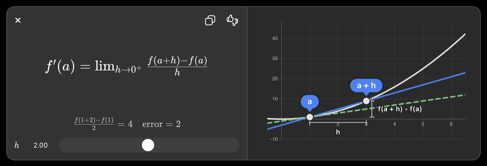

Imagine you're driving a car
Suppose your odometer says:
| Time | Distance |
|---|---|
| 1 PM | 10 km |
| 2 PM | 70 km |
You traveled 60 km in 1 hour.
Your average speed is
60 km/hour
But what if someone asks:
How fast were you going exactly at 1:30 PM?
You can't answer using average speed.
You need the instantaneous speed.
That's exactly what a derivative is.
Derivative = Instantaneous rate of change.
A hill example
Imagine you're walking up a hill.
*
*
*
*
*
*
Sometimes the hill is steep.
Sometimes it's flat.
The derivative tells you:
"How steep is the hill at this exact point?"
- Positive derivative → going uphill
- Negative derivative → going downhill
- Zero derivative → flat
In mathematics
Suppose
y = x²
If
x = 2
y = 4
Move just a tiny little bit
x = 2.001
y = 4.004001
The derivative measures
How much y changed
------------------
How much x changed
For
y = x²
the derivative is
dy/dx = 2x
Meaning
At
x = 2
the slope is
2 × 2 = 4
So if x increases just a tiny amount,
y increases about 4 times as much.
Here's an interactive visualization of the derivative as the slope of a tangent line:

Why is this useful?
Because almost everything changes.
- Stock prices
- Temperature
- Weight
- Heart rate
- House prices
- AI model error
The derivative tells us
How fast is it changing right now?
How AI uses derivatives
Suppose you're teaching AI to recognize cats.
Initially
Prediction
Dog ❌
Actual answer
Cat
AI is wrong.
It measures how wrong it is using a loss function.
Example
Loss = 100
The goal is
Loss = 0
The AI has knobs
Imagine thousands of knobs.
Weight 1
Weight 2
Weight 3
Weight 4
...
Weight 5,000,000
Each knob changes the prediction.
But...
Which knob should turn?
By how much?
This is where derivatives become essential.
Example
Suppose one weight is
w = 3
Loss
100
Increase the weight a tiny amount
w = 3.001
Loss becomes
105
Oops!
Loss increased.
That means
Turning this knob upward makes the AI worse.
The derivative is positive.
Derivative > 0
Increase weight
↓
Loss increases
So we should move the weight down.
Another case
Increase
w = 3 → 3.001
Loss becomes
95
Now the derivative is negative.
Increase weight
↓
Loss decreases
Good!
Move that weight upward.
Think of derivatives as a GPS
Imagine you're lost on a mountain.
You want to reach the bottom.
At every step you ask:
Which direction goes downhill the fastest?
The derivative answers:
Go left
or
Go right
Every single step.
AI repeats this process millions of times.
Guess
↓
Measure error
↓
Compute derivatives
↓
Adjust weights
↓
Guess again
↓
Smaller error
↓
Repeat
This learning process is called gradient descent.
TensorFlow does this automatically
When you write
with tf.GradientTape() as tape:
loss = model(x)
gradients = tape.gradient(loss, model.trainable_variables)
TensorFlow computes the derivative of the loss with respect to every weight.
If your neural network has
5 million weights
TensorFlow computes
∂Loss/∂Weight₁
∂Loss/∂Weight₂
∂Loss/∂Weight₃
...
∂Loss/∂Weight₅₀₀₀₀₀₀
You don't have to derive these by hand.
Simple analogy
Think of baking cookies.
You taste one.
Too sweet.
Which ingredient should you reduce?
- Sugar?
- Butter?
- Flour?
- Salt?
The derivative tells you:
"If I change this ingredient just a little, how much will the taste improve or worsen?"
AI does exactly the same thing with millions of parameters.
The complete AI learning cycle
Training Data
│
▼
Neural Network
│
▼
Prediction
│
▼
Calculate Error (Loss)
│
▼
Take Derivatives
│
▼
Find which weights caused the error
│
▼
Adjust the weights slightly
│
▼
Make another prediction
│
▼
Repeat thousands or millions of times
The key idea
A derivative is simply a measure of how one quantity changes when another changes by a tiny amount. In AI, the quantity we care about is the loss. By computing the derivative of the loss with respect to every weight, the algorithm knows exactly which parameters to increase or decrease to make future predictions more accurate. This is the mathematical foundation of how modern neural networks learn.
Yes—but only if you are doing supervised learning.
TensorFlow itself doesn't know the expected result. You provide it as part of the training data.
For example:
| Input | Expected Output |
|---|---|
| 🐱 Cat image | Cat |
| 🐶 Dog image | Dog |
| 🐱 Cat image | Cat |
| 🐶 Dog image | Dog |
When you train the model, you typically write something like:
images = [...]
labels = ["cat", "dog", "cat", "dog"]
model.fit(images, labels)
Here:
- images = inputs
- labels = expected outputs (the "correct answers")
The model starts with random weights.
First training step
Suppose the first image is a cat.
The model predicts:
Dog (85%)
Cat (15%)
But the label says:
Cat
TensorFlow compares:
Prediction: Dog ❌
Expected: Cat ✅
The prediction is wrong, so it computes a loss and updates the weights.
After many examples, the predictions improve.
What if TensorFlow doesn't know the answer?
Then you're in a different type of machine learning.
1. Supervised Learning ✅
The expected result is provided.
Example:
Email → Spam
House → $250,000
Photo → Cat
The model learns from correct answers.
2. Unsupervised Learning
No expected answers.
Example:
Customer A
Customer B
Customer C
No labels like "VIP" or "Regular."
The algorithm tries to find groups or patterns on its own.
For example:
Group 1
- Young customers
- Buy electronics
Group 2
- Older customers
- Buy groceries
No one told it these groups existed.
3. Reinforcement Learning
There is no correct answer for each step.
Instead, the model receives rewards or penalties.
Example:
Robot moves left → +10 points
Robot hits wall → -5 points
It learns by maximizing rewards over time.
A school analogy
Think of a student taking a math quiz.
Supervised learning
Teacher:
2 + 3 = ?
Student:
6
Teacher:
Wrong.
Correct answer is 5.
The student learns from the correction.
Unsupervised learning
Teacher hands the student 1,000 objects and says:
Sort these into groups.
No correct grouping is given.
The student looks for similarities.
Reinforcement learning
Teacher says:
Escape this maze.
No instructions.
The student tries different paths:
Wrong path → Lose points
Correct path → Gain points
Over time, the student discovers a good strategy.
So, does TensorFlow know the expected result?
- Supervised learning: Yes, because you provide the expected outputs (labels) as part of the training data.
- Unsupervised learning: No, there are no expected outputs.
- Reinforcement learning: No, the model learns from rewards rather than correct answers.
TensorFlow is just the framework that runs the training process. Whether there are expected results depends on the type of machine learning you're using.